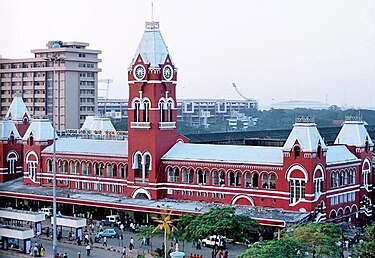

சென்னை மாவட்டம்
CHENNAI DISTRICT
VANNKKAM CHENNAI !!!!
Chennai (/ˈtʃɛnaɪ/ ⓘ, Tamil: [ˈt͡ɕenːaɪ̯], IAST: Cennaī), formerly known as Madras,[b] is the capital city of Tamil Nadu, the southernmost state of India. It is the state's primate city and is located on the Coromandel Coast of the Bay of Bengal. According to the 2011 Indian census, Chennai is the sixth-most populous city in India and forms the fourth-most populous urban agglomeration. Incorporated in 1866, the Greater Chennai Corporation is the oldest municipal corporation of India and the second oldest in the world after London.
Historically, the region was part of the Chola, Pandya, Pallava and Vijayanagara kingdoms during various eras. The coastal land which then contained the fishing village Madrasapattinam, was purchased by the British East India Company from the Nayak ruler Chennapa Nayaka in the 17th century. The British garrison established the Madras city and port, and built Fort St. George, the first British fortress in India. The city was made the winter capital of the Madras Presidency, a colonial province of the British Raj in the Indian subcontinent. After India gained its independence in 1947, Madras continued as the capital city of the Madras State and present-day Tamil Nadu. The city was officially renamed as Chennai in 1996.

The name Madras is of native origin, and has been shown to have been in use before the British established a presence in India.[15] A Vijayanagara-era inscription found in 2015 was dated to the year 1367 and mentions the port of Mādarasanpattanam, along with other small ports on the east coast, and it was theorized that the aforementioned port is the fishing port of Royapuram.[16] Madras might have been derived from Madraspattinam, a fishing village north of Fort St. George but it is uncertain whether the name was in use before the arrival of Europeans
The economy of Chennai consistently exceeded national average growth rates, due to reform-oriented economic policies in the 1970s.[207] With the presence of two major ports, an international airport, and a converging road and rail networks, Chennai is often referred to as the "Gateway of South India".[208][209] According to the Globalization and World Cities Research Network, Chennai is amongst the most integrated with the global economy, classified as an beta-city.[210] As of 2023, Chennai metropolitan area had an estimated GDP of $128.3 billion, ranking it among the most productive metro areas in India.[8] Chennai has a diversified industrial base anchored by different sectors including automobiles, software services, hardware, healthcare and financial services.[211][212] As of 2021, Chennai is amongst the top export districts in the country with more than US$2563 billion in exports.
The city has a permanent exhibition complex Chennai Trade Centre at Nandambakkam.[214] The city hosts the Tamil Nadu Global Investors Meet, a business summit organized by Government of Tamil Nadu.[215] With about 62% of the population classified as affluent with less than 1% asset-poor, Chennai has the fifth highest number of millionarie

The forest area in Theni district is about 33.70%. There are 27 forest areas in the district, constituting a total area of 795.81 km2 (307.26 sq mi). Of these, 19 areas fall under the Reserve Forest category with 255.44 km2 (98.63 sq mi) and 8 areas under Reserve Land category with 540.37 km2 (208.64 sq mi). Total area of forest under green cover classification was 806.86 km2 (311.53 sq mi). Dense forest and sparse forest are 292.81 km2 (113.05 sq mi) and 22.43 km2 (8.66 sq mi), respectively. There is no unclassed forest type in the district. About 44.65 km2 (17.24 sq mi) of artificial forest area are cultivated in the district. Wattle, softwood, fuel wood, cashew, neem, and tamarind are the main forest plantation species in the district.[6] The forest area in the district is 1,179.29 km2 (455.33 sq mi), which is 40.98% of the total geographical area of the district.[16] The Meghamalai Wildlife sanctuary, Srivilliputhur elephant reserve, and part of Kodaikanal Wildlife Sanctuary are situated in Theni district.